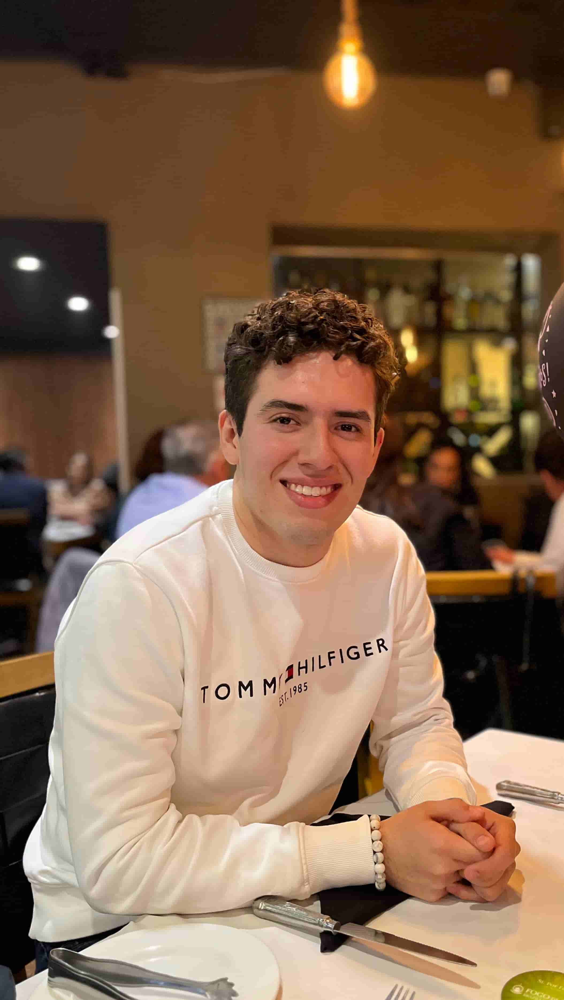

Daniel Osorio | WDD 130
Hi, I am Daniel Osorio. I am 23 years old and from Mexico. I currently live in Calimaya, State of Mexico, about two hours from Mexico City. I am studying Software Development through the BYU-Idaho online program. I work as a BDR at UnitX, selling AI vision systems for the manufacturing industry. I am happily married to the most amazing woman, Kenny. Our first anniversary will be on July 27, 2025. I love steak and steakhouses. I enjoy listening to music, especially rock and electronic. I am recovering from back pain, but I enjoy staying active and doing sports. Some of my favorite physical activities include CrossFit, Hyrox racing, and trail running. I love spending time with my wife and family, traveling together, shopping, watching movies, and attending music festivals and concerts. One of my favorite things to do is visit different steakhouses and try new meat cuts. I also enjoy video games, especially those with strong storytelling or deep psychological themes. My dream is to become an excellent software engineer, specializing in artificial intelligence and machine learning. I am always looking for new challenges and continuous improvement.